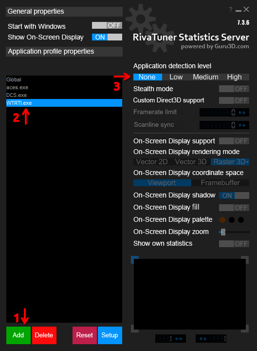

Troubleshooting
WTRTI doesn't work with "Custom Battles" or "Custom Difficulty" (Test Flight):
Make sure you enable the "Allow web UI" option in the custom settings.
This option was added in the "Hornet's Sting" update (2.45).
Radar Altitude does not work
The value “radio_altitude” may be missing in telemetry on some aircraft, because the aircraft does not have a radar altitude or the value is displayed on a digital device (modern jets).
The game just doesn't provide values from HMD or MFDs.
Before reporting a bug, check for the "radio_altitude" in the "State" window (press F2 in the main window) while you are in "Test Flight".
If this value is missing, then the problem is on the game side.
Fuel consumption indicators do not work
The value “fuel” may be missing in telemetry on some aircraft (e.g. some early Yak's, or modern jets).
Before reporting a bug, check for the "fuel" in the "State" window (press F2 in the main window) while you are in "Test Flight".
If this value is missing, then the problem is on the game side.
The overlay is stuttering/freezing or Data is not updating when ALT-TAB to the game
Try to turn off the "Hardware Accelerated GPU Scheduling" (HAGS).
How-To: https://obsproject.com/kb/hags
Note: If HAGS is disabled, the DLSS Framegen may not work.
Not working with DEV server
WTRTI may not work if a vehicle does not have a cockpit or the game client is Minimal, causing some information to be missing in the game telemtery.
As a workaround, you can try enabling "Handle data in every game mode" (Settings -> Advanced tab).
Info
Some indicators may not work due to the limited amount of data available in the telemetry, e.g. Critical AoA, Critical Air Speed.
Warning
At some point, the overlay may continue to be displayed when you are in the menu, in which case try disabling this option.
OSD does not show up or "Data is not updated in the main window"
If you have antivirus software, try adding an exclusion for WTRTI.
RTSS OSD is not working
RTSS may conflict with other overlays, try disabling them first.
If you are running the game through Steam, try to disable Steam Overlay for War Thunder, just open Properties -> General -> Uncheck the "Enable the Steam Overlay while in-game".
The MSI Afterburner/RTSS overlay is displayed on top of the built-in OSD (WTRTI)
Add an exclusion for WTRTI.exe in the RTSS settings:

WTRTI OSD: transparency is not working/black rectangle
First try to restart your PC.
Windows: The Compositor on your system is not working properly.
Can be a few things:
- Graphics driver issue, try to reinstall.
- Windows is corrupted (sfc /scannow).
Linux: Ensure that the compositor is enabled (kwin, compiz, picom).
Flight data is not being written to the CSV file
Perhaps Antivirus restricts write access, try to add exclusion for WTRTI.